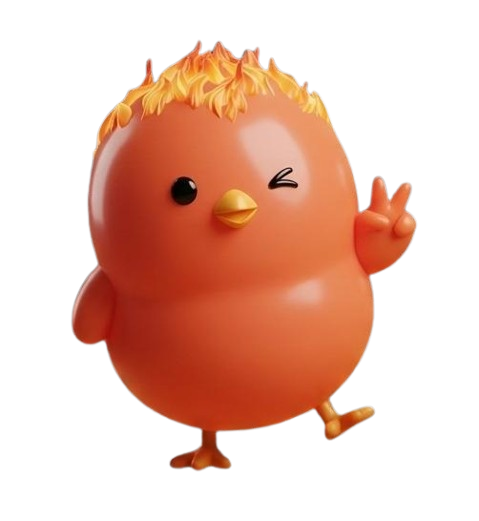
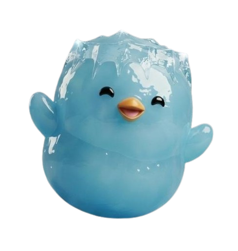
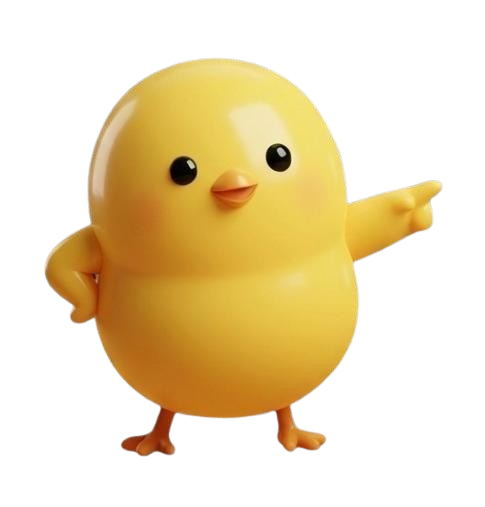

程式碼：
<!DOCTYPE html>
<html lang="zh-Hant">

<head>
    <meta charset="utf-8" />
    <meta content="width=device-width, initial-scale=1.0" name="viewport" />
    <title>Game Over - Selfie Mode</title>
    <link href="https://fonts.googleapis.com/css2?family=Noto+Sans+TC:wght@400;700;900&amp;display=swap"
        rel="stylesheet" />
    <link href="https://fonts.googleapis.com/icon?family=Material+Icons+Round" rel="stylesheet" />
    <script src="https://cdn.tailwindcss.com?plugins=forms,typography"></script>
    <script>
        tailwind.config = {
            darkMode: "class",
            theme: {
                extend: {
                    colors: {
                        primary: "#FFC107",
                        secondary: "#FF9800",
                        "background-light": "#F9FAFB",
                        "background-dark": "#1F2937",
                        "surface-light": "#FFFFFF",
                        "surface-dark": "#374151",
                    },
                    fontFamily: {
                        display: ["'Noto Sans TC'", "sans-serif"],
                    },
                    borderRadius: {
                        DEFAULT: "1rem",
                        'xl': '1.5rem',
                        '2xl': '2rem',
                    },
                    boxShadow: {
                        'soft': '0 4px 20px -2px rgba(0, 0, 0, 0.1)',
                        'glow': '0 0 15px rgba(255, 193, 7, 0.5)',
                    },
                    animation: {
                        'float': 'float 3s ease-in-out infinite',
                        'float-delayed': 'float 3s ease-in-out 1.5s infinite',
                    }
                },
            },
        };
    </script>
    <style>
        body {
            font-family: "Noto Sans TC", sans-serif;
            min-height: 100dvh;
        }

        /* 鏡像翻轉，讓自拍像鏡子一樣 */
        #selfie-video, #capture-canvas {
            transform: scaleX(-1); 
        }

        @keyframes flash {
            0% { opacity: 0.8; }
            100% { opacity: 0; }
        }

        @keyframes float {
            0% { transform: translateY(0px); }
            50% { transform: translateY(-8px); }
            100% { transform: translateY(0px); }
        }

        .flash-overlay {
            position: fixed;
            inset: 0;
            background: white;
            z-index: 100;
            pointer-events: none;
            animation: flash 0.5s ease-out forwards;
        }
        
        /* 鴨子裝飾通用樣式 */
        .duck-sticker {
            position: absolute;
            width: 6rem; /* w-24, 約96px，適中大小 */
            height: 6rem;
            object-fit: contain;
            z-index: 10;
            filter: drop-shadow(0 4px 6px rgba(0,0,0,0.2)); /* 加一點陰影讓它立體 */
        }
    </style>
    <script src="js/global_audio.js"></script>
    <script src="https://html2canvas.hertzen.com/dist/html2canvas.min.js"></script>
</head>
<body
    class="bg-background-light dark:bg-background-dark min-h-screen flex flex-col items-center justify-between overflow-hidden relative transition-colors duration-300">
    <main
        class="w-full max-w-md h-full flex flex-col flex-grow relative bg-background-light dark:bg-background-dark shadow-2xl mx-auto min-h-screen">
        
        <!-- Camera Container -->
        <div id="camera-container"
            class="relative w-full h-[65vh] bg-gray-200 dark:bg-gray-800 overflow-hidden flex items-end justify-center rounded-b-[2rem]">
            
            <!-- Video Element for Live Camera -->
            <video id="selfie-video" autoplay playsinline muted 
                class="absolute inset-0 w-full h-full object-cover z-0 bg-black"></video>
            
            <!-- Hidden Canvas for Screenshot processing -->
            <canvas id="capture-canvas" class="absolute inset-0 w-full h-full object-cover z-0 hidden"></canvas>

            <!-- Loading Text -->
            <div id="camera-loading" class="absolute inset-0 flex items-center justify-center z-0 text-white font-bold bg-black/50">
                開啟相機中...
            </div>

            <!-- === 鴨子裝飾貼紙 (4個角落) === -->
            
            <!-- 左上角: Duck 1 (Green) -->
            

            <!-- 右上角: Duck 2 (Blue) -->
            

            <!-- 左下角: Duck 3 (Yellow) -->
            

            <!-- 右下角: Duck 4 (Red) -->
            <!-- 稍微往上移一點 (bottom-24)，避免擋住拍照按鈕 -->
            

            <!-- Decorative Border -->
            <div class="absolute inset-4 border-2 border-white/40 rounded-3xl pointer-events-none z-20"></div>
            
            <!-- Photo Button -->
            <button id="btn-share"
                class="absolute bottom-6 right-6 z-30 bg-primary hover:bg-yellow-400 text-white font-bold py-3 px-6 rounded-full shadow-lg transform transition-transform active:scale-95 flex items-center gap-2 animate-bounce-slow">
                <span class="material-icons-round text-xl">camera_alt</span>
                <span>拍照分享 !</span>
            </button>
        </div>

        <!-- Result Card -->
        <div
            class="flex-grow bg-surface-light dark:bg-surface-dark rounded-t-[2.5rem] -mt-8 relative z-30 p-8 pb-12 shadow-[0_-10px_40px_rgba(0,0,0,0.05)] flex flex-col items-center justify-around transition-colors duration-300">
            <div class="text-center space-y-2 mt-4">
                <h1 class="text-3xl font-black text-primary tracking-wide">
                    <span
                        class="block text-xl text-gray-400 dark:text-gray-500 font-bold mb-1 uppercase tracking-widest text-sm">Game
                        Over</span>
                    共疊 <span id="final-score" class="text-4xl text-secondary">0</span> 層 !
                </h1>
                <h2 class="text-2xl font-black text-primary tracking-wide">
                    和鴨子合照一張吧 !
                </h2>
            </div>
            <div class="w-full flex items-center justify-between gap-6 mt-8 px-4">
                <button onclick="window.location.href='game_countdown_screen.html'"
                    class="group relative flex items-center justify-center w-16 h-16 rounded-full bg-white dark:bg-gray-700 border-2 border-primary text-primary shadow-soft hover:shadow-glow transition-all duration-300 transform active:scale-90">
                    <span
                        class="material-icons-round text-3xl group-hover:rotate-180 transition-transform duration-500">refresh</span>
                </button>
                <button onclick="window.location.href='index.html'"
                    class="flex-grow py-4 px-8 rounded-full border-2 border-primary text-primary bg-white dark:bg-transparent hover:bg-primary hover:text-white dark:hover:bg-primary dark:hover:text-white font-bold text-lg tracking-wider transition-all duration-300 shadow-soft transform active:scale-95 text-center">
                    返回首頁
                </button>
            </div>
        </div>
    </main>

    <script>
        // 1. Parse Score
        const urlParams = new URLSearchParams(window.location.search);
        const score = urlParams.get('score');
        if (score) {
            document.getElementById('final-score').textContent = score;
        }

        // 2. Init Camera
        const videoElement = document.getElementById('selfie-video');
        const loadingText = document.getElementById('camera-loading');

        async function initCamera() {
            try {
                const stream = await navigator.mediaDevices.getUserMedia({ 
                    video: { 
                        facingMode: 'user',
                        width: { ideal: 1280 },
                        height: { ideal: 720 }
                    }, 
                    audio: false 
                });
                videoElement.srcObject = stream;
                videoElement.onloadedmetadata = () => {
                    loadingText.style.display = 'none';
                };
            } catch (err) {
                console.error("Camera Error:", err);
                loadingText.textContent = "無法開啟相機權限";
            }
        }
        
        window.addEventListener('load', initCamera);

        // 3. Screenshot Logic
        document.getElementById('btn-share').addEventListener('click', async () => {
            const btnShare = document.getElementById('btn-share');
            const navButtons = document.querySelector('.flex-grow.bg-surface-light .flex');
            const canvasElement = document.getElementById('capture-canvas');

            // Visual Flash
            const flash = document.createElement('div');
            flash.className = 'flash-overlay';
            document.body.appendChild(flash);
            setTimeout(() => flash.remove(), 500);

            // Hide UI temporarily
            btnShare.style.opacity = '0';
            if (navButtons) navButtons.style.opacity = '0';

            try {
                // Freeze video frame to canvas
                canvasElement.width = videoElement.videoWidth;
                canvasElement.height = videoElement.videoHeight;
                const ctx = canvasElement.getContext('2d');
                
                // Draw flipped video to match CSS transform
                ctx.save();
                ctx.scale(-1, 1);
                ctx.drawImage(videoElement, -canvasElement.width, 0, canvasElement.width, canvasElement.height);
                ctx.restore();
                
                videoElement.classList.add('hidden');
                canvasElement.classList.remove('hidden');

                // Capture
                const canvas = await html2canvas(document.querySelector('main'), {
                    backgroundColor: null,
                    scale: 2,
                    useCORS: true, 
                    logging: false
                });

                // Restore
                canvasElement.classList.add('hidden');
                videoElement.classList.remove('hidden');

                // Download
                const link = document.createElement('a');
                link.download = `duck-selfie-score-${score || '0'}.png`;
                link.href = canvas.toDataURL('image/png');
                link.click();

            } catch (err) {
                console.error("Screenshot failed:", err);
                alert("截圖失敗");
                canvasElement.classList.add('hidden');
                videoElement.classList.remove('hidden');
            } finally {
                btnShare.style.opacity = '1';
                if (navButtons) navButtons.style.opacity = '1';
            }
        });
    </script>
</body>

</html>